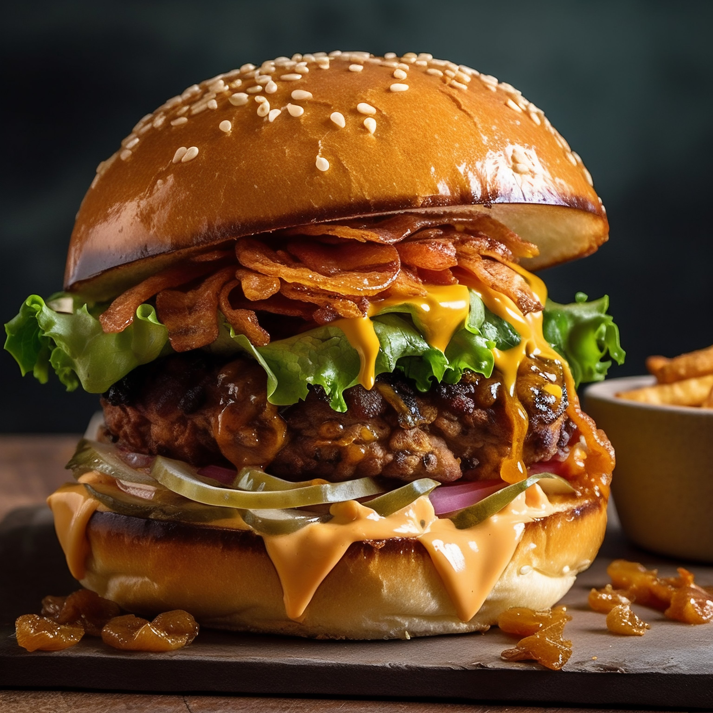

A restaurant's proprietor is called a restaurateur, Professional cooks are called chefs. Most restaurants (other than fast food restaurants and cafeterias) will have various waiting staff to serve food, beverages and alcoholic drinks.

Alan Yau, and Oliver Peyton. Today restaurants are classified or distinguished in many different ways. The primary factor is usually the food itself e.g. Italian, Korean, Chinese, Japanese, Indian, French, Mexican.

A chef's table is a table located in the kitchen of a restaurant reserved for VIPs and special guests. Patrons may be served a themed tasting menu prepared and served by the head chef. Restaurants can require a minimum party and charge a higher flat fee